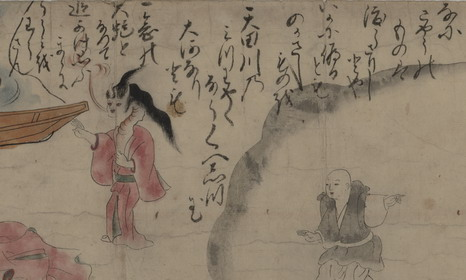

上半身が蛇に化した清姫。髪は逆立ち、額に長い角を2本生やしている。目は赤く、首は伸びて、蛇腹のようになっている。
出典：親書誌：U426_nichibunken_0152：道成寺縁起；ドウジョウジエンギ／日付：2010／資源識別子：U426_nichibunken_0152_0007_0000
Copyright (c)2010- International Research Center for Japanese Studies, Kyoto, Japan. All rights reserved.